Coordinate systems, projections and transformations
The background to coordinate reference systems and projections and an explanation of what they are will be covered in the lecture segment at the beginning of the class, and the presentation and any other supporting materials will be available in Minerva. The lecture segment should help you to understand why you are doing these exercises. If you still aren’t sure, please ask Clare.
Learning outcomes
When you have completed this section you should be able to
- describe the main types of data used in GIS
- find spatial data from a wide range of sources
- find out essential information about your data and apply that to your use of data in GIS
Experimenting with coordinate systems
In this exercise you will use a map of the World that has already been set up to enable you to experiment with different coordinate systems and projections and investigate the different effects of each on distance and area.
- You should already have downloaded
CoordSystems.7zfrom Minerva and unzipped it. If not, do so now. - The folder in the unzipped data should also be called
CoordSystems. This is an ArcGIS Pro project. Open theCoordSystemsmap in the same way that you opened the sample map in the first section.
You should find that you have a map of the World open in Arc that looks something like the image below.
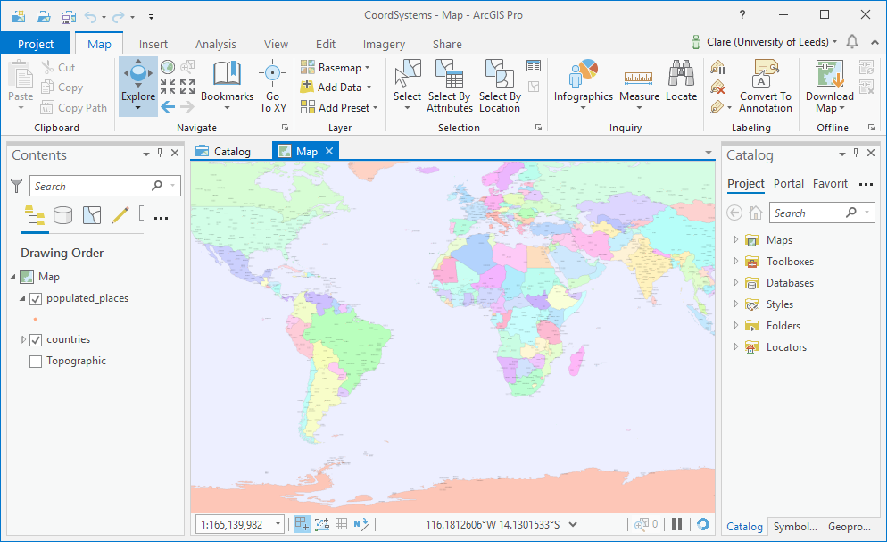
The data for this map is taken from Natural Earth data which is a general dataset made available for download under an open source licence. It is well worth investigating for future use.
Repairing broken file links
If you find that your map doesn’t show and that you have the red exclamation marks next to the data as in the image below, follow these instructions to repair the data links.

If you use absolute file paths and you have to move the files from one location to another, or if you have a project folder set up by someone else, you may find that the broken links are marked by a red exclamation mark next to the layer name. This can also happen if you are adding .lyr files for symbology.
Repairing broken file links
This video clip can be found in the module area of Minerva or in the full list of video clips.
To check the name of the file that you’ll need to locate:
- Open the layer properties and go to the
Sourcetab - Under
Data Sourceyou will see which file Arc is looking for - make a note of this

- Look through your file system to find the correct file
Once you know where the file you need is located, do the following to repair the link:
- from the layer properties source tab
Set Data Source... - Navigate to the file that you need then
OK > OK
That layer should now appear on your map. If you’re lucky all of the missing layers will appear, but if you’re not you’ll need to repeat the process for each layer.
Finding out the map coordinate system
This first step is important. You need to know what the coordinate system of the current project is. To do this you need to look in the Map Properties.
- Right-click on the
Mapsubheading in the contents pane - Select
Properties - Click
Coordinate Systemson the left of the properties panel
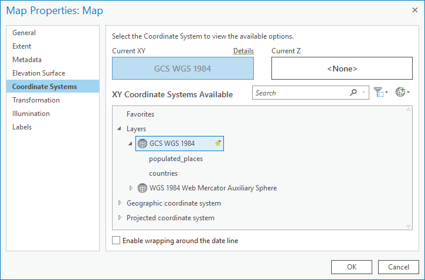
The Coordinate System tab gives you information about the current setting, including its name. It also shows the coordinate systems of the layers in the map.
In this project the layers called populated_places and countries both have the same coordinate system as the map.
The layer Topographic is in WGS 1984 Web Mercator Auxiliary Sphere.
Map coordinate system
What is the coordinate system of this map? Make a note of it.
Do you think that it is a Geographic Coordinate System or Projected Coordinate System, and what makes you think that it is one or the other?
- Click
OKto close the properties box for now.
The map is in a coordinate system called “GCS WGS 1984”. The GCS indicates that it is a Geographic Coordinate System.
Using the Measure tool
We’ll use the Measure tool to compare the effect of different projections on this map of the World. You can find it’s button in the Inquiry group on the Map tab of the ribbon.
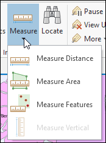
This video clip can be found in the module area of Minerva or in the full list of video clips.
The tool gives you a choice between measuring distance, area or a particular feature. Once you click on the down arrow underneath the tool you get an option box so that you can change the unit measurement, and clear the previous measurement. This box also shows the results of your measurement.
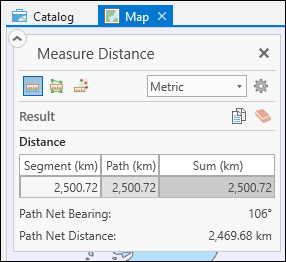
Measuring distances
Zoom in on the map until you can see city names. Use the Measure Distance tool to measure the distance from
LondontoIstanbul, double-clicking to finish your measurement.Make a note of the distance that you come up with. What units have been used for the measurement? You may need to go into the options to find out.
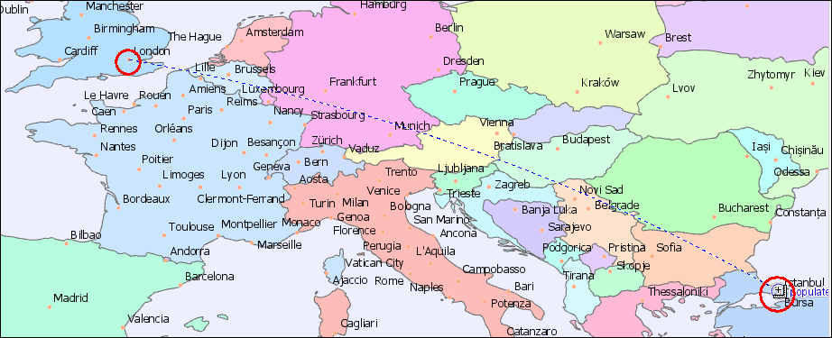
- To clear the measurement click on the
Clear resultsbutton on the options box.
Now you can start trying out different coordinate systems and projections and see what effect they have on distances and areas on the map. Each time you change the coordinate system zoom out to the full extent of the map and have a look at the result. Then zoom back in and take some measurments.
Changing the map coordinate system
To change a coordinate system:
- Right-click on the map title (at the top of the table of contents - it’s probably called
Map) and selectProperties - Select the
Coordinate Systemtab - Browse to the required coordinate system in the
XY Coordinate Systems Availablebox, for example, browse to:- `Projected Coordinate Systems > World > Azimuthal Equidistant (world)
- then click
OK - Zoom to
Full extent(remember it’s a button on the Map tab of the ribbon) to have a look at the map - then zoom back in again to make the suggested measurements
Set the coordinate system to each of the projected coordinate systems below in turn.
For each one use the measure tool to measure the distance from London to Istanbul
and the area of the polygon for Algeria in North Africa (select the
Measure featurestool.Make a note of the results, and don’t forget to include the units that you are using. Check the selections in the Measure tool window.
Azimuthal Equidistant (world) -
Projected Coordinate Systems > WorldCassini -
Projected Coordinate Systems > WorldAitoff (sphere) -
Projected Coordinate Systems > World (Sphere-based)North Pole Stereographic -
Projected Coordinate Systems > Polar
Try out some more projects for yourself. Notice that some of the projections cover limited geographic extents - these tend to be specific to an area such as a particular country and are designed to minimize the distortion for that area so look rather odd for other areas, e.g. the British National Grid for Great Britain.
Thinking about projections
Looking at the results you have obtained for distance and area, what do these tell you about different projections? How do distance and area compare in different examples?
I hope this shows you that it is important to be aware of coordinate systems, and to have some idea how to find out which system works best for which part of the world, and for what purpose. There is a lot of information available. Have a look at the general GIS books on the module reading list for some ideas to start you off.
For more specific information try Snyder (1987) or Maher (2010) from the Coordinate Systems and Projections part of the reading list.
When you have finished this section close ArcGIS completely.
Using coordinate systems: Setting up your project
For this next exercise you will be using the data that you downloaded before the class and exploring what you need to do when your layers have different projections to each other - a situation that is very likely to occur when you obtain data from different sources. This exercise should show the importance of understanding coordinate systems and how they work in ArcGIS.
Starting a project from scratch
For this exercise you’ll need to set up the project for yourself from scratch.
- Open ArcGIS Pro by searching for it in the Windows start menu. Make sure that you open
ArcGIS Pro, not any other version of Arc! - You should get a start screen which looks something like the image below. Though your recent projects will be different.

- Under
Blank Templatesclick onMap - You’ll get a dialog box which you should fill in as follows:
- For the name enter the name of the project - so in this case something like
Projections - For the location navigate to the folder where you want to store the project. You can use the default setting if you want to or click on the folder icon to navigate to another location
- Check that
Create a new folder for this projectis ticked - Click
OKto create your new project
- For the name enter the name of the project - so in this case something like
ArcGIS Pro creates the new project folder and sets up the component parts automatically. As you are working on your projects make sure that you save all of your data into the project folder so that it all stays together even if you move the project to another drive, e.g. by backing it up to a USB stick.
Open out some of the subheadings in the Catalog pane. You should see that Arc has created some empty content for you. Most notably a geodatabase for data storage with the same name as your project, e.g.
Projections.gdb. This geodatabase will have a little house icon on it to show that it’s the “home” geodatabase.
You should find yourself with a familiar screen. Arc will have set up a map view and added a topographic base map, which will show a default area.
Adding your downloaded layers to the map
Copy the data that you have downloaded into the project folder for this project.
Add the three layers that you have already prepared to the map that you’ve just created by dragging and dropping them from the Catalog pane to the contents pane in the order below. If the Catalog pane isn’t visible remember that you can open it by going to View > Catalog pane on the ribbon to open it.
You may need to Add a Folder Connection to be able to find the files.
Add the following layers in the order shown below:
- European River Catchments
- SRTM height data for Skye, off the West coast of Scotland
- Ordnance Survey miniscale map of the UK. This may not show up when you add it, don’t worry about that for the moment.
Map layers from the ESRI Portal
ESRI Portal is a fantastic resource of maps and data that you can add to your own maps. Follow the instructions below to download the additional data that you need for this exercise, but it’s also worth having a look at what else is available to you.
- Go to the
Catalogpane on the right of the window - Click on the
Portalheading, then click on the button forAll Portal- remember there are tool tips if you hover over buttons. - Search for
rivers Europein the search box. If you can’t find it under All Portal try clicking onLiving Atlasand searching again.
You are looking for a layer with a yellow symbol, as under the mouse pointer in the image below.
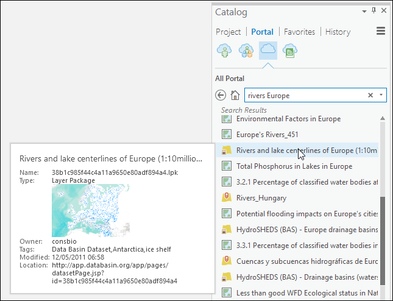
This symbol shows that this layer is a Layer Package which can be added to your own map, rather than a complete map. For this exercise use the layer package Rivers and lake centerlines of Europe which should appear a short way down the results.
- You can see more information about the layer and a preview by hovering over it
- Right-click on the title to
Add to current map. (If you don’t already have a map open you can click toAdd to new map.)
ArcGIS automatically saves the layer package to your default location - on computers in University clusters that is a folder called ArcGIS on your M:/ drive. From there it is easy to save the data to the location in which you want to store it (i.e. within the project folder) for future use, by exporting it.
Export a vector layer to your project folder
To export a vector layer to a location and format of your choice, so that all of your data is in one place and within the project:
- Right-click on the rivers and lake centerlines layer in the contents pane then
Data > Export Featuresand the Geoprocessing pane should open on the right of the window.
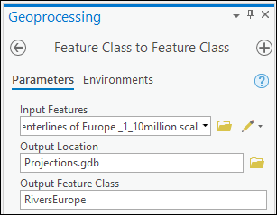
- The input features should be set automatically to the layer that you right-clicked on, or you can select it now using the buttons on the right
- select a location to save the new feature class by clicking on the folder icon next to
Output Feature Classand navigating to the geodatabase that has the same name as your project, but an extension of .gdb. - give your output feature class a name, e.g.
RiversEurope- note no spaces or unusual characters - then click to
Run
Arc should add your new layer to your map. It’s good practice to Remove the original version of the layer to keep your contents tidy.
Repeat this with the European River Catchments layer. This and the RiversEurope layer are both vector layers and are best stored in a geodatabase.
Export a raster layer to your project folder
This allows you to export a raster layer to a location and format of your choice, so that all of your data is in one place and within the project.
The dialogs for the raster files are a bit more complex than for the vector.
- Right-click on the SRTM layer in the Contents pane, then
Data > Export Rasterand the Geoprocessing pane should open to the right of the window.
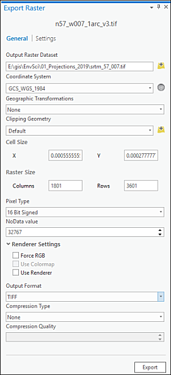
- select a location to save the new raster by clicking in the folder next to
Output Raster Dataset. This doesn’t have to be in the geodatabase but can just be in the project folder. - check that the other settings match the figure, though the defaults should be fine in this case. You can check settings like cell size and pixel type by looking at the
Propertiesof the original layer. - Click to
Exportthe layer
Arc should add your new layer to your map. Remove the original version of the layer to keep your contents tidy.
Copy a raster layer to your project folder
The Miniscale layer is basically a coloured background raster rather than a layer used for processing. In this case the simplest way to get it into your project successfully is to use the Catalog pane to copy and paste the file from the original folder to your project folder then add the copy to your map in the usual way.
Once you are sure that you have all of the data you need safely stored within your project, you can go ahead and delete the original data from the default location, or wherever you saved it to originally. This will save space on your disk. Space can become an issue as you do more GIS!
Working with coordinate systems in Arc
The map is set to the coordinate system of the first layer to be added, which in this case will have been the original European River Catchments layer. If the coordinate systems don’t match Arc will try to project the subsequent layers “on the fly”. This usually looks fine - your layers should line up - but isn’t ideal if you are going to do analysis or measurements. In this case you’ll need to decide what coordinate system you need to work in and change all of your data to that.
Start by deciding what coordinate system you want your final map to appear in - in this case we’ll aim for:
British National Grid
To check the coordinate system for the current map:
- Go to the map
Propertiesby right-clicking on theMapheading in the contents pane - go to the
Coordinate Systemstab and check theCurrent XYbox - Make a note of the coordinate system that is given there
Arc sets the map to the coordinate system of the first layer to be added to the map. So in this case it should be set to ETRS 1989 LAEAS L52 M10, not British National Grid.
To find the coordinate system in the layer properties:
- right-click on the layer in the contents pane
- go to
Properties - click to look at
Sourceand scroll down and expand theSpatial Referenceheading
Check the coordinate system of each of the following layers and make a note of the Projected and Geographic coordinate systems for each layer listed below.
- Miniscale map of the UK
- ArcGIS portal river centerlines layer
- European River Catchments
- SRTM Height layer
You should find that each layer has a different coordinate system, and that not all are projected, but one layer, the Miniscale layer, has spatial reference as Unknown.
The layers that have a proper spatial reference should all appear in the correct location with regard to each other - thanks to Arc’s “on-the-fly” reprojection.
But use Zoom to layer to find the Miniscale layer - because the spatial reference is unknown this layer has ended up at latitude 0, longitude 0, somewhere close to Africa.
Given that you need to be able to display all of your layers correctly, and in future exercises will need to use data for analysis, the rest of this section will look at how to project and reproject data from one coordinate system to another.
Defining projections
You should have found that the projection of the Miniscale layer is Undefined. To be able to display it and use it with other data you need to use the Define projection tool to attach information about the projection.
The challenge here is that you need to know what the original projection wasy - you can’t just project it to anything. This can take a bit of detective work.
The Ordnance Survey data from Digimap is provided in the British National Grid projection. This is an important bit of information, but has to be discovered from the supporting website.
You’ll use one of the Geoprocessing tools to define the projection. Geoprocessing tools give you an opportunity to do a lot of very advanced processing tasks without needing to use a command-line interface. You’ll be using them a lot in the rest of this course.
- Open the toolboxes by clicking on the
Analysistab of the ribbon, and then onTools. The toolbox should open in the right-hand panel. You may need to click on theToolboxestab to see the full list.
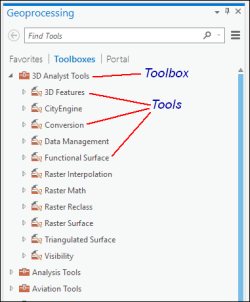
- Go to
Data Management Tools > Projections and Transformations > Define Projection - or if you know what tool you want to use you can type it’s name into the
Find Toolssearch box instead - Select the Miniscale file for the
Input Dataset - Select British National Grid for the coordinate system by clicking on the button to the right of the
Coordinate Systemfield and going toProjected Coordinate System > National Grids > Europe > British National Grid - Click on
OK - Then click to
Run
You probably won’t see any difference immediately, but remove the Miniscale layer from your map, then add it back in again, and this time it should appear in the right place. Also check the projection by going to the layer properties. This time it should say British National Grid.
Transforming projections
It should now be possible to add the rivers layer , which has a projected coordinate system of WGS1984, Web Mercator Auxiliary Sphere, to the map and transform it “on the fly”. This will allow you to display the layers together on one layout, but the transformation is only temporary and only affects this map project.
Transformations work on the underlying datum. So to change from a projection using the ETRS 1989 datum to the British National Grid, which is the OSGB 1936 datum, you’ll need to apply a transformation such as ETRS_1989_To_OSGB_1936_OSTN15. Preset transformations do this for you, with lots of underlying complicated maths.
When you start reprojecting data you will have a choice of transformation to apply to it. In many cases the default will be fine, but be aware that sometimes you will have to choose one for yourself.
There is more information about projections and transformations available online.
The ESRI support website gives more information about how to choose the correct transformation.
Reprojecting data: vector data
On the fly transformation is fine if you are just looking at the map, but if you need to do any measuring or analysis then you need to reproject the data layers into the same coordinate system as each other and the map.
To be able to reproject a layer the following is required:
- Your layer must already have a projection. If it is undefined you first need to define the projection.
- You need to know whether your data is vector or raster1
- You need to know which coordinate system and datum you want your data to be in
This video clip can be found in the module area of Minerva or in the full list of video clips.
We want to reproject the river centerlines layer to British National Grid which uses OSGB 1936 as its datum. This is a vector layer, so proceed as follows:
Geoprocessing > Data Management Tools > Projections and Transformations > Project- Fill in the dialog box as shown in the image below
- selecting an appropriate location and name (maybe just add “BNG” to the end of the existing name) for your projected layer
- and setting the
Output Coordinate Systemas British National Grid - the
Geographic Transformationshould be set automatically, accept that for now
- then
Runthe tool
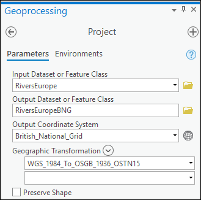
Follow the same steps for the other vector layer - the European River Catchments. This time the Geographic Transform may be different - probably something like
OSGB_1936_To_ETRS_1989_1, but don’t worry if it isn’t!
Make sure both new vector layers are now on your map.
Reprojecting data: raster data
The previous section shows you how to reproject vector data, now let’s reproject an example of raster data using the SRTM data that you downloaded earlier.
SRTM data
To change an SRTM raster tile to British National Grid you’ll also need to project it, but using a different tool to the vector layers above. This time go to:
Tools > Data Management Tools > Projections and Transformations > Raster > Project Raster
The form is very similar to the form for reprojecting vector formats so go ahead and fill it in for the SRTM tile.
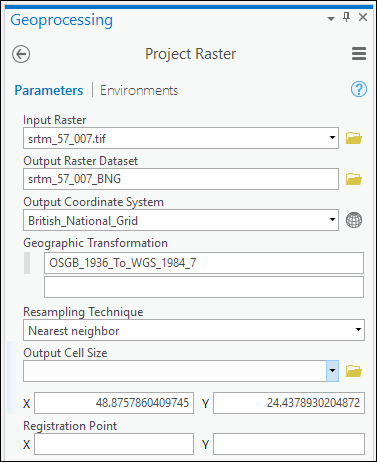
- For now leave the other options, e.g. Output cell size, as the default.
Runthe process (this may take some time…)
It isn’t necessary to repeat this for the Miniscale layer as that is already in British National Grid.
At this point check the properties for each of the newly project layers to ensure that they are all in British National Grid.
If any of the layers are not in British National Grid check the relevant instructions above and carry them out again (asking for help if you need it).
Creating a new map in British National Grid
Now that you have all of the layers projected into the same coordinate system it is time to create a new map and add all of the projected layers to that.
- To create a new map within your current project go to the
Inserttab of the ribbon and click onNew Map - Go to the map properties by right-clicking on the map title, which in this case is probably something like
Map 1 - Go to the
Generaltab and underNamegive the new map an informative name, e.g.Rivers - British National Grid - while you’re there it’s worth changing the
Display unitstoMeters, which makes more sense than Decimal Degrees for a map in a projected coordinate system - Click
OKto close the properties. Note that because you have changed the name it is now easy to see which map is which on the tabs at the top of the map. - Add all four of your reprojected layers, that is the ones in British National Grid, to the map by dragging and dropping them from the Catalog pane. It shouldn’t matter what order you add them in.
Check that the whole process has worked by going to the map properties again and looking at the
Coordinate Systemstab.If you look under
XY Coordinate Systems Availableand drop down theLayerssubheading, you should be able to find all four of your layers underBritish National Gridas shown in the image below
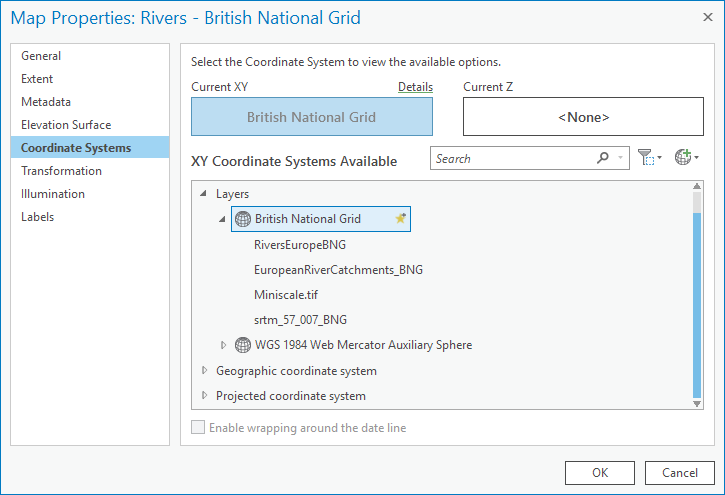
If your properties look like the image above, with all of them in British National Grid, then it has all worked OK. If any of your layers (except the basemap layer added by Arc by default) are not under the British National Grid heading then you need to look back at the previous instructions and check that you followed them correctly.
Summary of defining projections and projecting data
This summary of the main points from this chapter should help you to remember what you need to do each time that you obtain a new dataset. Read it through, and then remember where to find it so that you can refer back to it.
Warning
If you don’t follow these steps then you can give yourself a major headache when trying to load data for a project.
In addition to the text summary and the link to a video clip, there is a step-by-step diagram at the end of the chapter which you could use as a quick reminder each time that you have data to load into GIS.
This video clip can be found in the module area of Minerva or in the full list of video clips.
What is the current coordinate system?
Always start by checking the current coordinate system / projection of your data and make a note of it. You won’t be able to do much if you don’t know what system the data uses.
- Check the file / layer properties or the metadata using the Catalog.
- If that doesn’t help (e.g. if it’s listed as
Undefined), look at any documentation that came with the data (e.g. sometimes there is a text file in the same folder or zip file) - If that still doesn’t help, check with whoever or where ever you got the data from, e.g. the web page if you downloaded it from the web.
- If you still haven’t found the answer check Maher (2010) and follow her instructions to work it out for yourself.
- If all else fails try an informed guess, e.g. if the data is from an official UK source it could well be British National Grid (though not always…)
Define projection
If the coordinate system is Undefined you first need to define it to its original coordinate system, which you should have worked out in the previous section.
You cannot change the coordinate system by redefining the projection - define it first, then use the vector or raster project tools as appropriate.
Project layer and transform
If/when your data is projected it is not in the same projection as the rest of your data or your map, then you need to Project the layer. Remember that you use a different tool depending on whether the data is raster or vector.
It is possible to transform on the fly, but if you are using your data for further analysis it is more reliable to Project to a new layer using the appropriate tools.
Projection all correct
If your data is projected and is in the same projection as your map or the rest of your data, then there is no problem and you can just use it as it is.
Summary flow chart of defining projections and projecting data
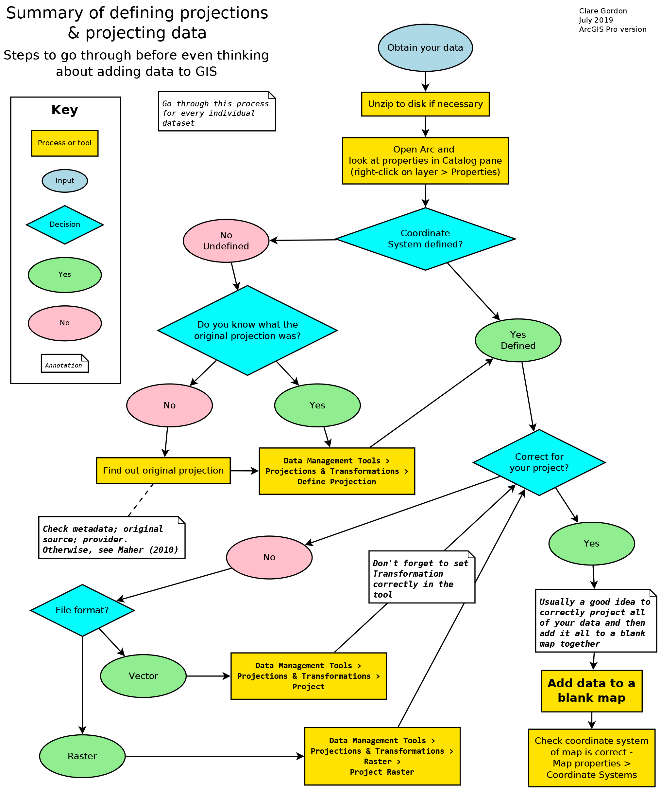
Recommended reading: Coordinate sytems and projections
This is a complex subject but it is essential to have a good grasp of the principles and techniques before you start using your own data in GIS.
For more detailed information than has been given in this chapter have a look at the following references from the module reading list.
Longley, P.A. (2011) Chapter 5, section 7.
Maher, M.M. (2010) - the whole book is a practical guide to using coordinate systems and projections.
Links to more information online
ESRI provide a free online course gives a clear overview of Geographic Coordinate Systems and is worth looking through. You will need an ESRI username and password which you can obtain from IT helpdesk.
The ESRI article on Projection on the fly and geographic transformations is a useful guide to how and why you need to use transformations.
Videos online
The videos below give background information on using coordinate systems in GIS.
Karl Olsen gives an overview of geographic and projected coordinate systems (USA examples).
Eric Compas has produced a series of four videos which show:
- Coordinate system basics
- Defining coordinate systems
- Coordinate systems - projecting
- Coordinate systems: the biggest mistake!
-
If you are still unsure about the differences between vector and raster formats remember that you looked them up in a dictionary in the first section. Remember also that this will come with experience! You can also check the items in the general section of the reading list for more information or the Ordnance Survey have a useful video on vector and raster formats. ↩